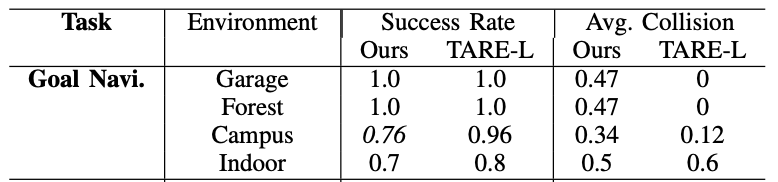

Hsueh-Cheng Wang1, Siao-Cing Huang1, Po-Jui Huang1, Kuo-Lun Wang1,
Yi-Chen Teng1, Yu-Ting Ko1, Dongsuk Jeon2, and I-Chen Wu1
________________________________________________
1National Yang Ming Chiao Tung University, Taiwan.
2Seoul National University, Korea.
Abstract
Curriculum learning has proven highly effective to speed of convergence with improved performance in a variety of applications. However, curriculum generation requires the ranking of sub-tasks in order of difficulty, which may depend on application domains. Deep reinforcement learning (RL)-based navigation typically involves collision avoidance and the planning of drivable paths towards a desired goal. Existing methods based solely on navigation are unable to deal with blocked pathways, thereby navigation among movable obstacles (NAMO) involves more complex controls in continuous action space. Researchers dealing with robot navigation problems have yet to devise effective methods to rank samples from easy to hard or devise a suitable pacing function in diverse unseen environments. In the current study, we ranked the navigation difficulty metrics of various large-scale representative environments and trained DRL policies from scratch within a certain computation budgets. We found that low difficulty environments received high rewards, in particular in a relatively open tunnel-like environment that only required wall following. To facilitate more complex policies in NAMO task, we leveraged curriculum learning built upon pre-trained policies, and developed pace functions appropriate to the difficulty of the environment. The proposed scheme proved highly effective to train a local planner capable of clearing the path of movable obstacles. Comprehensive evaluations were assessed in experiments conducted in simulated and real environments . Supplementary materials can be found at https://arg-nctu.github.io/projects/curl-navi.html.

Video
Supplementary Materials
The visualization of the geometric similarities of individual environments. We found that We found that tortuosity and distance close to obstacles may be the key metrics for successful training from scratch.
Goal navigation evaluating in simulated environments compared with TARE-L
